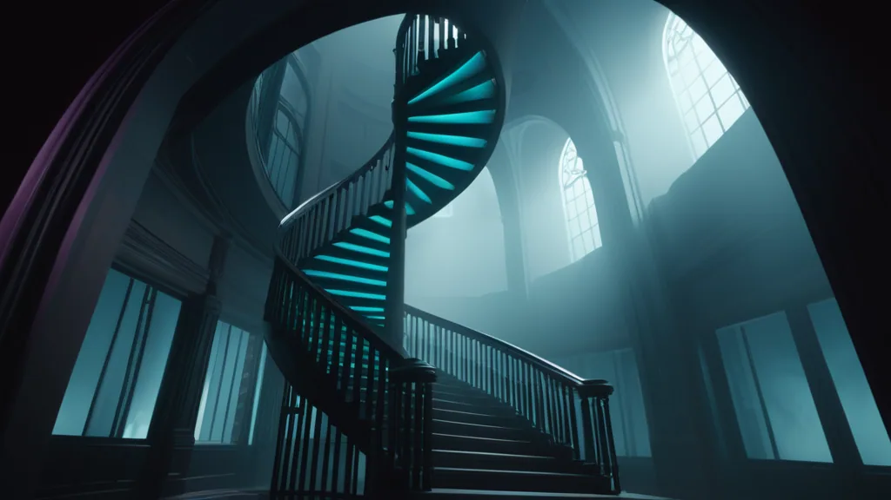

Knowing when to stop — a time-budgeted rule for the top of the step ladder

The step-count reckoning answered one question: how few steps can each model get away with? It never asked the opposite, and the opposite turns out to matter just as much: how many steps is enough — and when does one more step stop being worth it?
This came up staring at Chroma. Its ladder tops out at 22 steps. The 22-step doll was… decent. Also eight minutes. But "decent and slow" is not an answer — it's the absence of one. I never rendered past 22, so I have no idea whether 22 is the plateau, the near-side of the plateau, or still climbing. You cannot see a plateau you never walked onto.
The blind spot: we tuned the floor, never the ceiling
Every ladder in config/gallery.yaml was hand-set to be dense at the bottom (1, 2, 3, 4…)
because that's where the "how few" question lives. The tops were just… where I happened
to stop typing. Lined up against what the communities that ship these models actually
recommend, the caps are all over the place — and almost never aligned:
| Model | Our top | Community recommendation | Verdict |
|---|---|---|---|
| chroma | 22 | 26–30 (undistilled; 26 default) | stopped short |
| ideogram | 16 | 20 default · 48 "quality" | stopped short |
| longcat | 18 | 50 full (8–12 distilled) | short (but 50 is pricey) |
| ovis | 18 | ~20–30 typical (no hard default) | roughly there |
| schnell | 10 | 4 (more → artifacts) | overshoot |
| qwen2512 | 10 | 4 (Lightning; 8 ok) | overshoot |
| zimage | 14 | 4–8 (Turbo) | overshoot |
| krea2 | 10 | 8 (Turbo, cfg 0) | overshoot |
| flux9b | 10 | ~4 (Klein, distilled) | overshoot |
| flux4b | 12 | ~4 (Klein, distilled) | overshoot |
| sdxl trio | 10 | 4 or 8 (Lightning) | mild overshoot |
Two distinct failure modes fall out of that table:
- Undershoot — the undistilled few. Chroma and Ideogram are full models with no turbo shortcut (see the menagerie). They keep improving well past where I capped them, and I stopped below the step count their own communities treat as the baseline. The bare-model no-LoRA invariant means these especially lean on raw steps for quality.
- Overshoot — the distilled crowd. Everything with a Lightning/Turbo LoRA or baked-in distillation was trained to land in ~4–8 steps. Schnell past 4 doesn't get better — it gets worse (oversaturated, artefacted). So our 6/8/10-step rungs for these models are minutes of compute spent rendering a slightly worse image. We're paying to overcook.
Why "just render every step to 30" is a non-starter
Because the top of the ladder is also the expensive end. The marginal cost of one more step
— pulled straight from the render durations baked into the master filenames (_tNNs_) — is
wildly model-dependent:
| Cost tier | ≈ seconds per extra step | Models |
|---|---|---|
| trivial | ~1 | sdxlbase, realvisxl, juggernaut (Lightning-capped) |
| cheap | ~3–4 | wan, flux4b |
| moderate | ~7 | zimage |
| heavy | ~10–13 | ovis, flux9b, schnell, longcat |
| expensive | ~14–16 | krea2, qwen2512 |
| brutal | ~20–22 | chroma, ideogram |
A single Chroma cell at 30 steps is ~11 minutes. Sampling every step from 22→30 is eight renders ≈ 90 minutes — for one scene, one seed — to learn essentially nothing between adjacent rungs. Meanwhile rendering every step to 10 on the SDXL trio costs pennies. A flat "N steps for everyone" rule is simultaneously too coarse for the cheap models and ruinous for the expensive ones.
The rule
Three legs. The first two set where the rungs go; the third governs when to believe a decline.
1. Ceiling = at least community level. Climb to where the model is actually meant to be run. For the undistilled models that's a target to reach (Chroma ~30, Ideogram ~20). For the distilled ones it's a stop sign: the distillation step count is the ceiling, because the community has already established that more is no better — often worse. Don't re-derive what's documented; trust the prior.
2. Cadence = step-gap scales with per-step cost. This is the time-budget idea applied to the ladder itself: the dearer a step, the wider the gap between rungs. Keep the floor (1–4) dense for everyone — it's cheap and it's the interesting region — then widen as you climb:
| ≈ sec/step | Gap between upper rungs |
|---|---|
| ≤ 2 | every 1 step |
| 2–6 | every 2 |
| 6–12 | every 3 |
| 12–18 | every 4 |
| > 18 | every 5 |
So Chroma (brutal) climbs …, 18, 22, 26, 30 — five-step gaps, four rungs to its ceiling,
~30 min not 90. Z-Image (moderate) goes by 3s. The SDXL trio can afford every single step
because each one is ~1s. Same wall-clock philosophy everywhere; very different ladders.
3. Degradation is a claim that needs repeats. I've watched a higher-step image look
worse than a lower-step one and wanted to declare a plateau-and-decline. But a single seed
is a sample of one: that dip can be the sampler's trajectory for that noise seed, not a
property of the step count. (The flux4b black-at-10 incident
is the extreme version — a scheduler's bad spot at one exact step, invisible one rung
either side.) To assert "quality declines past N" you need the same model × scene × step
across several seeds and a consistent dip. We already have the machine for that: the
never-idle autopilot adds a fresh random seed
every time the matrix goes clean. So the policy is: never act on a one-seed dip; let seeds
accumulate, then look for agreement.
What it changes
- Extend (undistilled): add Chroma
26, 30; add Ideogram20(and maybe a single48"quality" probe). These are the only models where more steps plausibly buys more image. - Trim (distilled): drop the tails that sit past the distillation target — schnell,
qwen2512, the Klein pair, zimage, krea2, and the SDXL trio. Keeping one rung past the
target (e.g. schnell at 6) is fine as a visible "see, it doesn't help" data point; keeping
three is just heat. This also feeds the orphan-prune backlog item in
.claude/plans/localimagegen_next_steps— a principled basis for which rungs deserve to exist (and which existing masters are now extras).
The honest caveat
Our builders are not the community's defaults. Chroma here runs BasicScheduler + simple
- euler at cfg 4; the "26 steps" advice often assumes a beta scheduler and a different cfg.
So community numbers are targets, not gospel — the floor for "are we even in the right
ballpark," not a guarantee of where our plateau sits. The only way to truly find it is to
render our exact builder past the current cap and look. Which is now the plan: add the
rungs, let
--watchfill them across seeds, and let the gallery's compare-by-step view show where Chroma actually flattens — or doesn't.
The meta-lesson: a benchmark that only measured the cheap end of the dial was quietly lying at the expensive end. Measuring "how few" without ever measuring "how many" left every ladder mis-capped in one direction or the other. Now there's a rule for both ends.